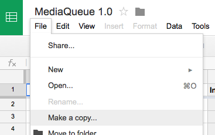
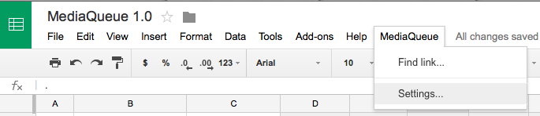
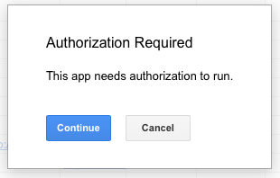
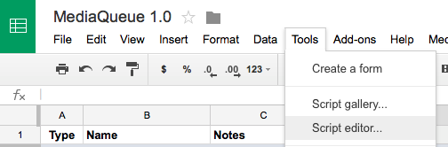
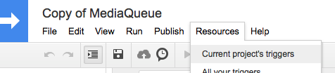
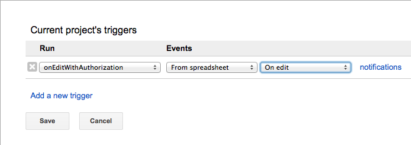
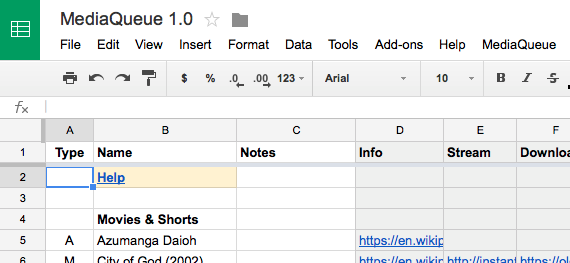
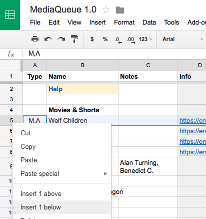
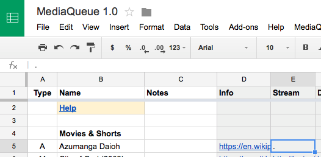
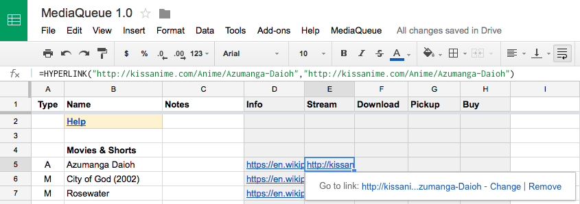

MediaQueue
MediaQueue allows you to write down media that you want to watch - movies, TV series, books, etc. - and helps you to quickly locate the media for streaming, download, pickup, or purchase.
MediaQueue is implemented as a Google Docs spreadsheet with custom macros that search for media items entered into the sheet.


Supported Media Sources
- Netflix - Stream source for everything
- KissAnime - Stream source for Anime (
A) - The Pirate Bay - Download source for everything
- BakaBT - Download source for Anime (
A) - Seattle Public Library - Pickup source for everything
- Barnes & Noble - Pickup source for Books (
B) - Amazon - Buy source for everything
Installation
Open the spreadsheet:
If you’re not already logged in to Google, click the SIGN IN link in the top-right corner.
From the File menu select Make a copy:

From the MediaQueue menu select Settings…:

Confirm the authorization prompt:

This will take you to the settings page, which you can leave blank for now.
Again, from the MediaQueue menu select Settings…:
This will take you back to the Queue sheet.
From the Tools menu select Script editor…:

The script editor will appear in a new tab.
From the Resources menu select Current project’s triggers:

An empty trigger box will appear:

Configure a new edit trigger with the following settings:

Click “Save” to dismiss the trigger box.
Close the current script editor tab. This will take you back to the Queue sheet:

Usage
1. Add an item

To insert a new media item in the queue, insert a new row and type the item name and the item type. Providing a correct item type helps MediaQueue search more relevant media sources in the next step.
Media types currently recognized by the Type column include:
A= AnimeM= MovieB= Book
Multiple types can be specified by separating with commas. For example M,A refers to an anime movie.
It’s okay to use other ad-hoc media types not in this list. They will be ignored. If a media item contains no recognized media type, only a generic set of media sources that are widely applicable will be searched.
2. Search for an item
To search for a media item in various media sources, locate the row containing the media item and the gray-colored column that corresponds to the type of media sources you want to search. For example if you wanted to find a stream to watch a media item, you would choose the Stream column.
Type a period (
.) in the cell for the row and column you identified. This will summon a new sheet and initiate a search for the media item in various media sources.
Once the search is complete select a search result by typing the number of your choice into the yellow cell.

The selected choice will be substituted back into the cell that you initially typed a period into.

Tips
By default the name of the media item is used as the search query when searching media sources. If you want to use an alternate search query then type a period followed by the desired search query when summoning the search sheet. For example you could type .azumanga daioh to specifically search for “azumanga daioh”.
Contributing
I’d love to hear from you if you make extensions to this program. Send me an email.
Adding support for new media sources would be especially welcome:
Desired Media Sources
- Wikipedia - Info source for everything
- Google - Info source for everything
- THEM Anime - Info source for Anime (
A) - Anime Planet - Info source for Anime (
A) - Rotten Tomatoes - Info source for Movies (
M) - IMDB - Info source for Movies (
M) - NyaaTorrents - Download source for Anime (
A) - iTunes Store - Buy source for everything